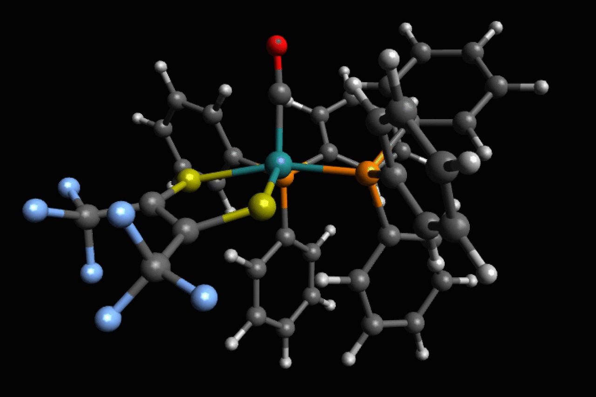

The story so far ...
Arham Om Talsania
a.k.a.
a.k.a.
ATOM
THAT WHIZ KID!
Certified PYTHON Developer
My name is Arham. My parents call me ATOM! I am a years old kid who like to code in PYTHON programming language! I was 2 years old when I started playing with iPad, and moved on to code blocks and logical games by the age of 5. By 6th year, I completed my certification in Python, and here I am. My other hobbies are music, reading and playing video games!
